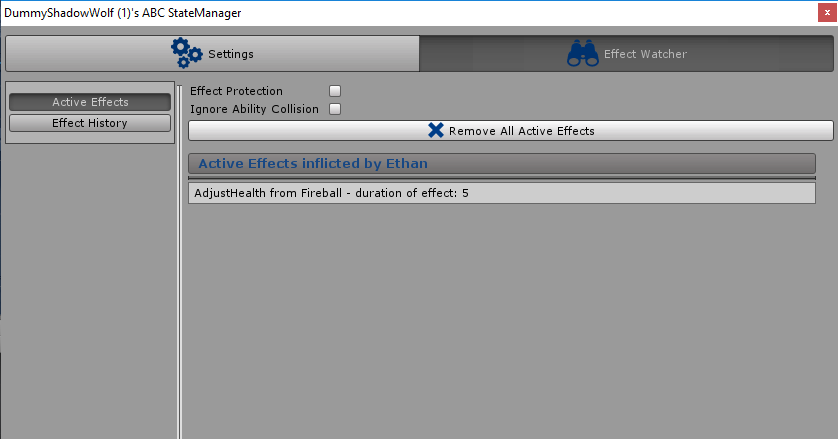

Active Effects
Overview
The active effects section will show all current effects on the entity. It will display the effect, what ability applied the effect and the duration of the effect. Once the effect is no longer active it will be removed from the screen. This can be used for debugging and testing purposes. Clicking the “Remove All Active Effects” button will remove all the effects on the entity during play.

Effect Protection
If this setting is enabled then no effects can be applied to the entity in any circumstance. This setting can be toggled on and off with an ability effect Toggle Effect Protection. If the setting is enabled/disabled with an effect then it will change the tick box which can be used for debugging and testing purposes. This setting can also be enabled/disabled before the game starts.
Ignore Ability Collision
If this setting is enabled then all abilities will ignore the entity and not collide or apply effects unless the ability has “Override Ignore Ability Collision” enabled. Ignoring all ability collisions can be toggled on and off with the ability effect: Toggle Ignore Ability Collision section. If the setting is enabled/disabled with an effect then it will change the tick box which can be used for debugging and testing purposes. This setting can also be enabled/disabled before the game starts.